The record
Everything you do is kept: projects save themselves with their history, every result is an artifact with its lineage and the SHA-256 of its files, and decisions and reviews are appended, never removed. What made a result, certificates, the methods and project archives take the record elsewhere.
Projects
Projects save themselves to the library as you work; the start page and the project menu (the project's name, top left) reopen them. Undo and Redo (⌘Z, ⇧⌘Z) cover every change, and the drawer (⌘J) shows the project's history and the session's log.
A bundle that moved: reopening a project finds each bundle where it was recorded. If it is gone, Locate… in the Data view points to its new place, once SituCraft has checked it is the same run.


Artifacts and their lineage
Each result is an artifact of the project: a segmentation, a comparison, a clustering and its map, a label set, a graph, an analysis, an export. Each is kept with what it was made from (its lineage), the method's version, every parameter and seed, and the SHA-256 of its files, so the same inputs and settings give the same result on any computer, and asking again answers the one already made. Decisions (a segmentation promoted, kept or rejected), reviews and the versions of filters, names, marker sets, regions and alignments are appended to the project with who made them, when and why, and never removed: taking one back is another. Formats describes every file SituCraft reads and writes.
What made a result
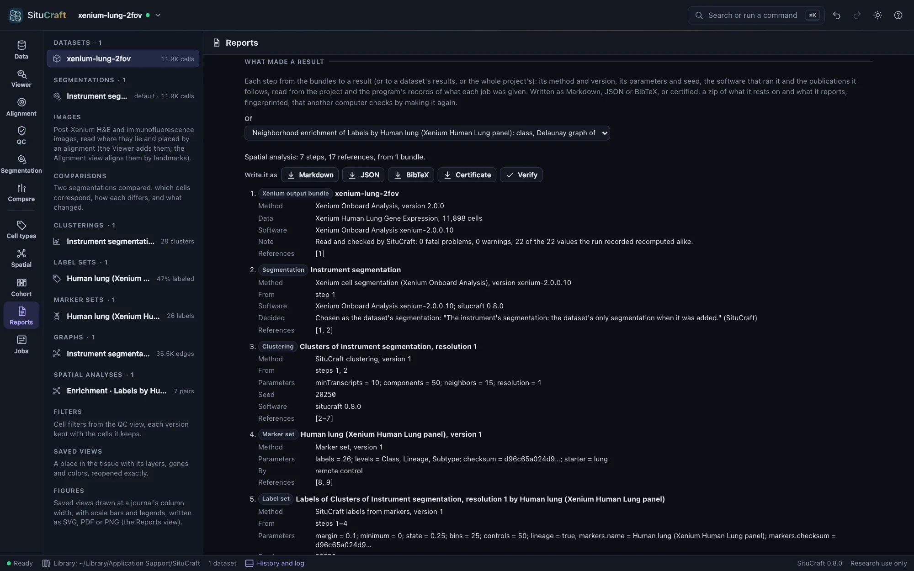
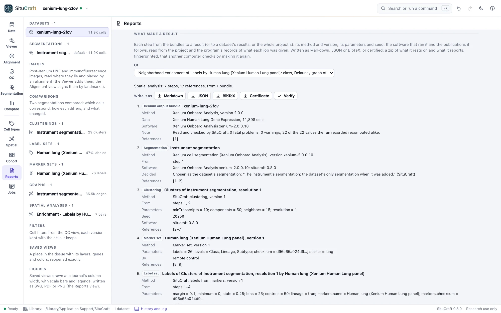
What made a result, below the figures in the Reports view (or What made it in the inspector, for any analysis, comparison, summary, label set, clustering, map, graph, segmentation, alignment or filter, and for a figure), lists each step from the bundles to the result, each after the steps it was made from: its method and version, its parameters and seed, the software that ran it, the decisions about it (a segmentation promoted, an alignment chosen) and the publications it follows. A cohort's comparison reaches back through each sample's segmentation, clustering, labels and graph and through the design; the samples' same steps are written once.
The publications SituCraft cites are kept in one list, each with its DOI, checked against a recorded copy of Crossref's record of it; a marker set's or an import's own citation is kept as written. Write it as Markdown (to read, or to paste into a methods section), JSON (situcraft-record, Formats) or BibTeX (for a reference manager). Remote control's record answers it.
Certificates
Certificate, in the Reports view's What made a result (of a result, a dataset's results or the whole project), writes a zip of what it rests on and what it reports: the bundles by their files' SHA-256; each step from them to the result, the program's by its job, parameters and the SHA-256 of every file it wrote, the page's own by the digest of its record, a figure by its drawing's digests, each with the numbers it reports; the project as it was, the record and the methods. Its fingerprint, the SHA-256 of what it certifies, names it: cite it with the result. A README says what it proves (that these bundles, analyzed as recorded, give these files and numbers, not that the result is right) and how to check it: situcraft verify makes each step again from the bundles and compares every file bit for bit. A certificate has no time of its own and keeps no path of your computer: the same project gives the same certificate. Remote control: export with what: certificate.
Checking a certificate
Verify a certificate…, in the Reports view, makes a certificate's result again and compares it with what was certified, in SituCraft itself (a record's Verify certifies it first): the bundles are looked for among those this library knows, each project's and the examples'. What it found is shown step by step.
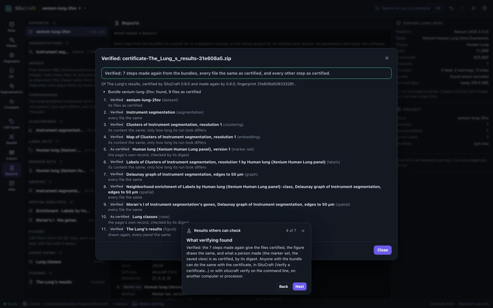
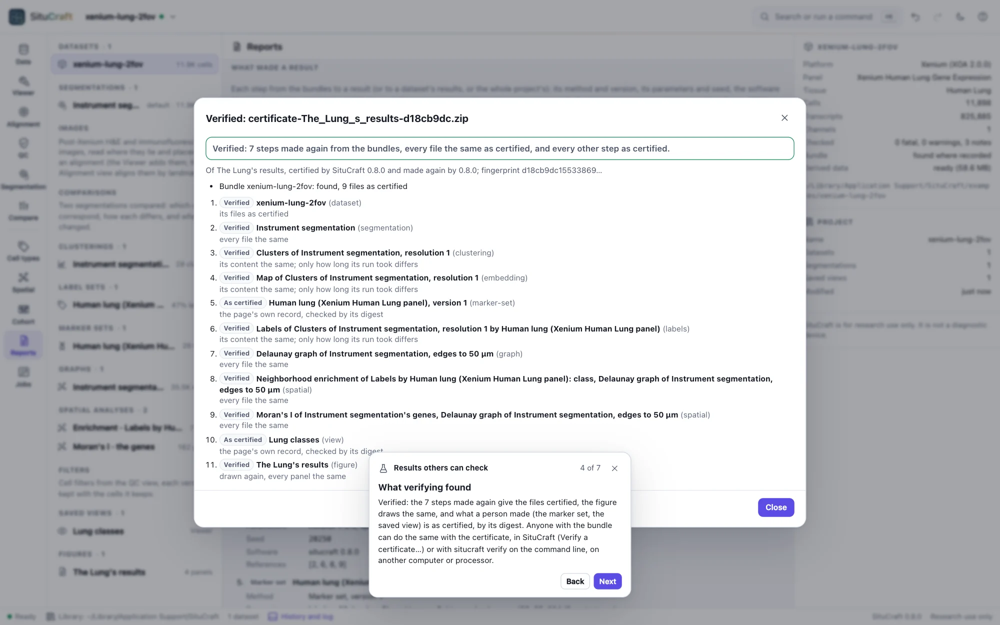
On the command line, situcraft verify does the same, with the bundles in the folders you give:
$ situcraft verify --data /path/to/bundles certificate.zip- It checks the certificate is as certified: its fingerprint, and every file it holds.
- It finds each bundle in the folders given (
--data, as many as needed) by its files' SHA-256, whatever its folder is named, and checks every file the certificate names. - It makes each step SituCraft's jobs made again, in a SituCraft of its own (a store of results and derived data in a temporary folder, never your library), from the spec each step recorded, and compares every file it writes, bit for bit: SituCraft gives the same bits on every computer. A clustering's, a map's or labels' description also records how long its run took, so their content is compared without it.
- It checks the page's own records by their digests, and computes again, in a headless Chrome, Edge, Brave or Chromium, those the page computes: a design from its samples, a filter's cells from their attributes, a figure's drawing.
It says, step by step, verified, differs (what, and where it first differs; a step made by another version of SituCraft says so) or not checkable (a bundle or file not found), and exits with 0, 1 or 2. --report verification.json writes what it found. An image, an alignment and its check are not made again (the image's own file records where it lay): they are certified by SHA-256. Given a report instead of a certificate, it checks the certificate the report carries, and the report against it.
Recipes, made again without a window
Recipe, in What made a result, writes a result's recipe: every step from the bundles to it, each the job that made it and its parameters as readable JSON. Nothing of your computer is in it: a bundle is named by its role (its folder's name), another file a step read (a table of labels, a reference) by its name, and what an earlier step made by that step. Agents and scripts ask for it with recipe.
situcraft run makes it again without a window, so that it runs on a cluster's nodes as on your computer:
$ situcraft run --recipe enrichment.recipe.json --bundle /path/to/bundle --out /path/to/new-folder- It works in a SituCraft of its own, its library in the output folder, and builds the bundle's derived data first (in a temporary folder, or
--cacheto keep them). - It makes each step's job in order, says how each went, and writes
run.json: the recipe and the bundles by SHA-256, each step's result and the files it wrote by SHA-256, and why it stopped if it did not finish. Its exit status is 0 when everything was made, 1 when a step failed and 2 when it could not run (a bundle or file missing, a step it cannot make on that bundle). - It writes
certificate.zip, a certificate of the result thatsitucraft verifychecks. - On the bundle the recipe was made from, it makes the very same results, with the same ids and files; on another bundle, every step it can: the cells the window chose for a step (every cell, a filter's, each cell's label of a label set) are chosen there again. A region's cells, a review's, curated labels' and niches' are the window's alone: such a step is made only on its own bundle, and on another one the run stops before anything is made, saying which.
- It gives the same files on any number of threads (
--threads) and on any computer. With--clock 2026-01-01T00:00:00Zeverything is recorded as made at that time, so the same recipe on the same bundle gives the same certificate, byte for byte. A clustering's, a map's and labels' files also record how long they took, which no clock fixes; their content is the same.
--dry-run checks the recipe, the bundle and the files and says what it would make; --file name=path and --data folder give the files a recipe reads. --report writes the result's report and methods in a headless page too, and batches make a recipe on many bundles, one an array job's task on a cluster: Running at scale.
A report
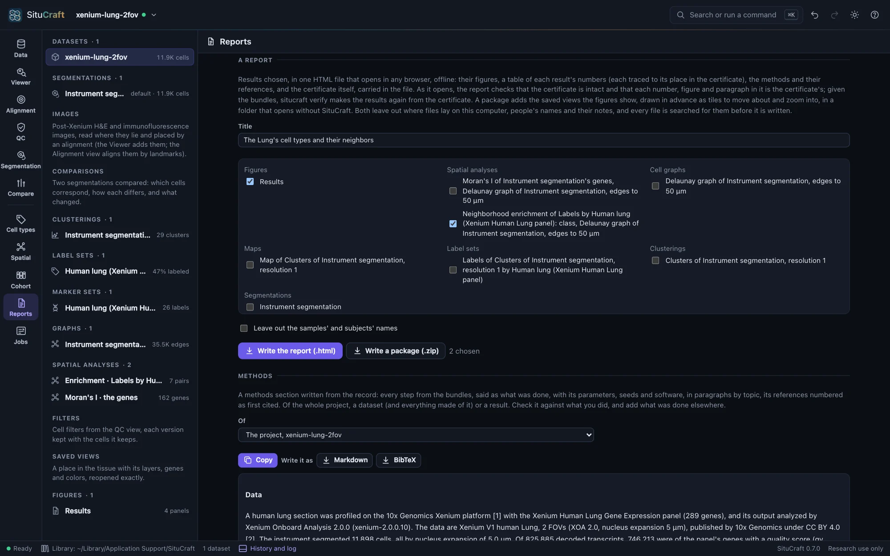
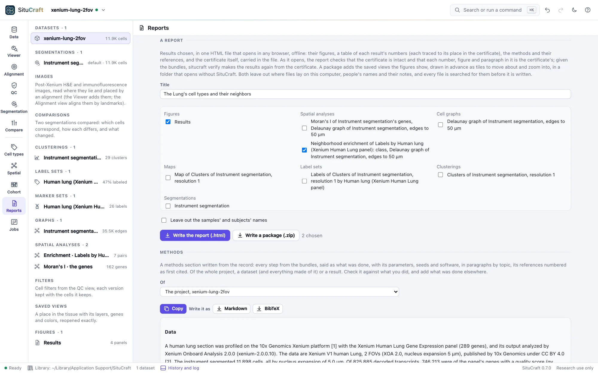
A report, in the Reports view, writes results you choose as one HTML file that opens in any browser, offline, with nothing to install and nothing asked of the network. It holds each figure chosen, as an SVG carrying its manifest; a table of each other result's numbers; the methods and their references; and the certificate of them all, carried in the file. Give it a title, tick the results (figures, analyses, comparisons, labels, clusterings and the rest, by kind) and Write the report (.html).
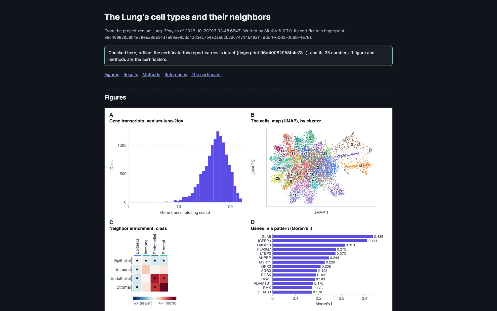
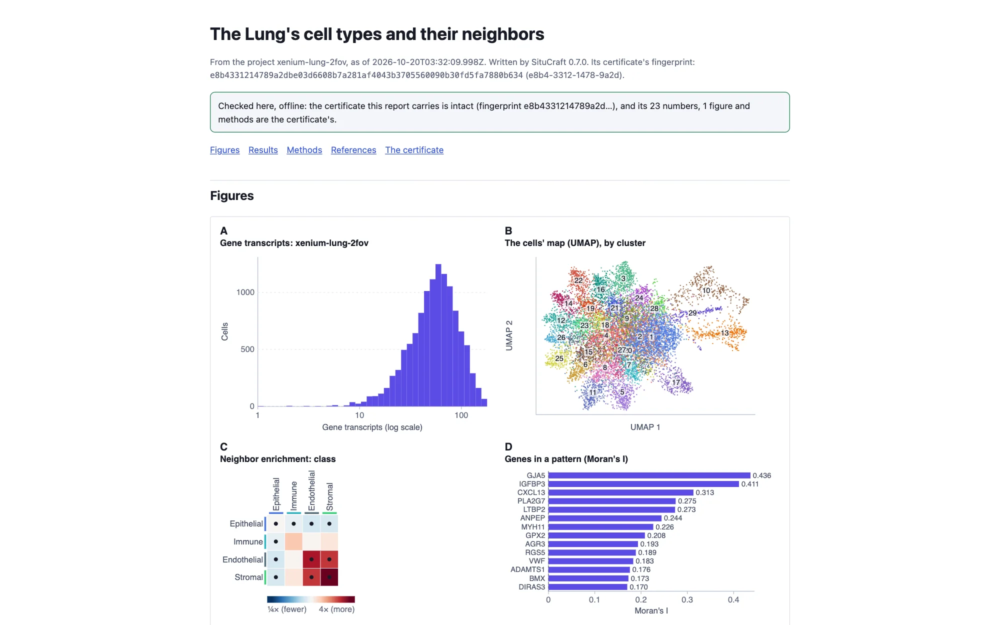
Every number in its tables is read from the certificate: rest the pointer on one to see its place in certificate.json. As the report opens, it checks the certificate it carries (its fingerprint and every file in it) and that each number shown is the certificate's, written as the report writes it, that each figure is the SVG whose SHA-256 the certificate holds, and that the methods are the certificate's. It says what it found at the top and marks any number that differs. The certificate can be saved from the report, and situcraft verify --data /path/to/bundles report.html makes its results again from the bundles. Remote control: export with what: report and results.
A result package
Write a package (.zip) writes the report with the saved views its figures show, in a folder (zipped, to download) that opens in any browser without SituCraft: unzip it and open index.html. Each view opens in a page of its own, its tissue drawn in advance as tiles from the view's own scale to the image's full resolution: drag to move, scroll (or + and −) to zoom, with its scale bar and legend. The certificate is beside them, with a README and a list of every file with its SHA-256. Nothing in it asks the network for anything, so it can be shared as it is, or put on a web server.
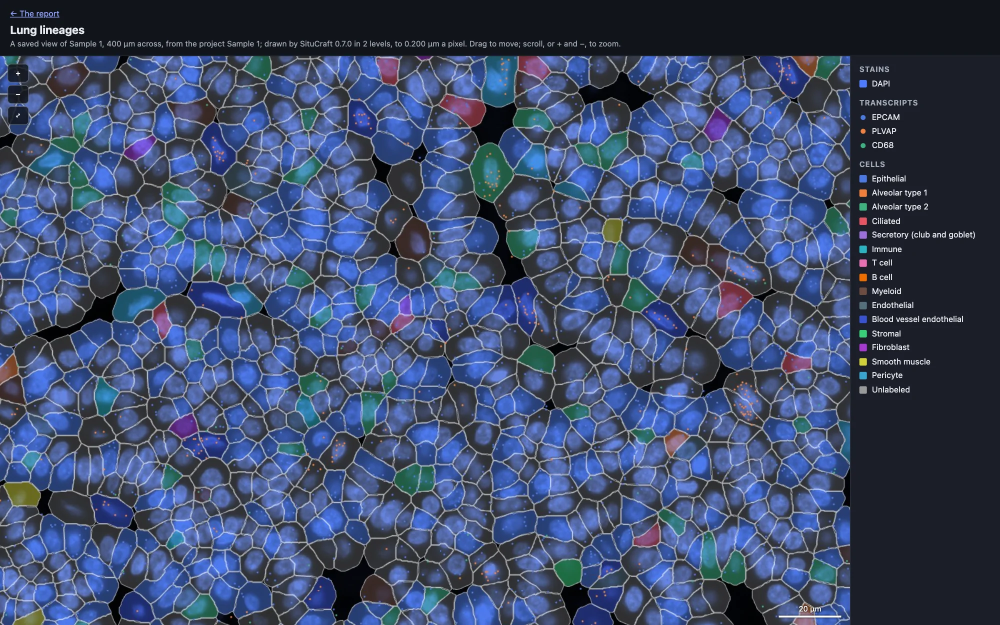
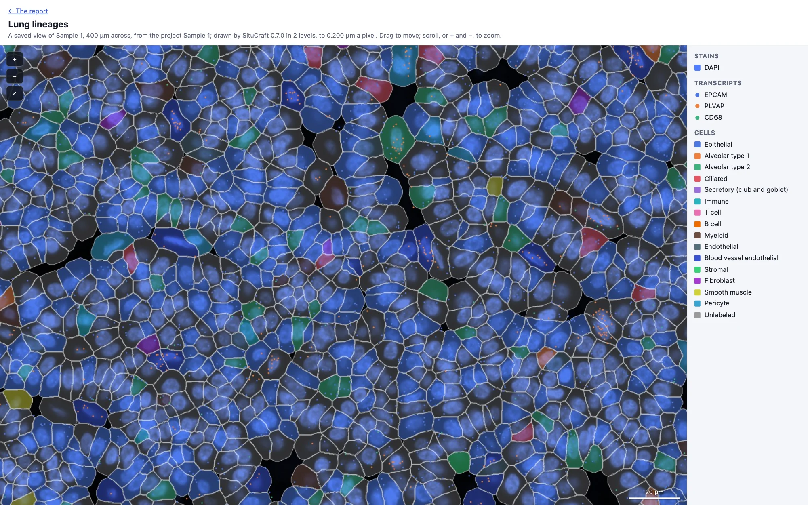
A report and a package leave out what your computer and the people using SituCraft say of themselves: where files lay (as in a certificate), people's names (who reviewed, drew, decided or curated, each written Person 1, Person 2, …) and the notes they wrote on reviews and regions. Tick Leave out the samples' and subjects' names to write each as Sample 1, Subject 1, … too. This is done to the project before anything is drawn or certified, so the figures, the methods, the record and the certificate all say the same; then every text the report or package holds, including the figures and the certificate inside it, is searched for each of them, and nothing is written if one is found. situcraft verify takes a package (its folder or its zip) as it takes a report. A step whose job was given the names left out (a summary of the samples, and what is compared from it) cannot be made again from it; verify says so, and the certificate made without leaving them out can be verified. Remote control: export with what: package.
Methods
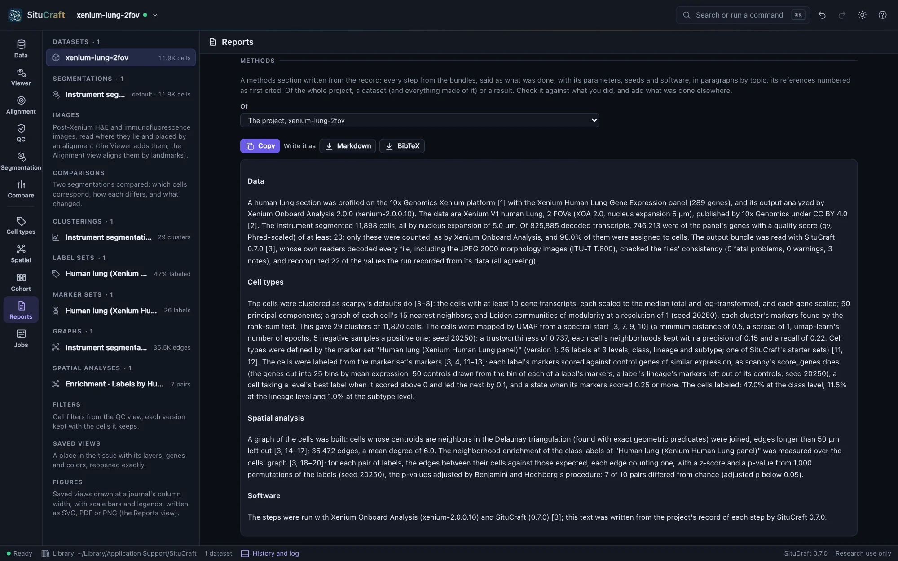
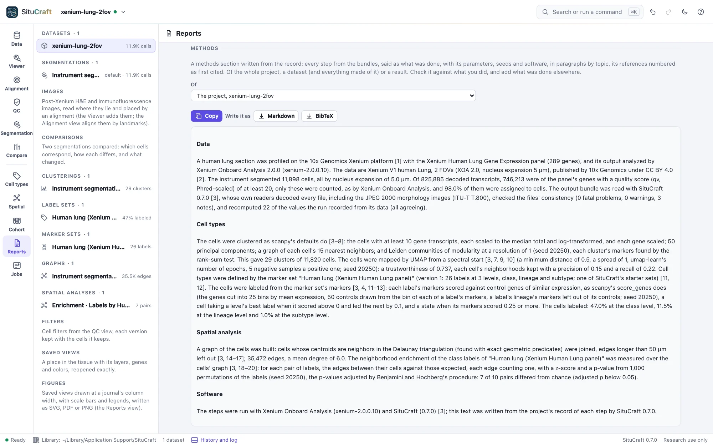
Methods, in the Reports view, writes a methods section from the record of the whole project, a dataset (and everything made of it) or a result (Its methods in the inspector): every step from the bundles said as what was done, in paragraphs by topic (the data and how SituCraft checked it; images and their alignments; regions; segmentations, their comparisons and why one was chosen; filters and reviews; clusters, maps, marker sets and labels; graphs and spatial analyses; a cohort's design, summary and comparisons, with what they found; figures; the software and its versions). Each step's parameters and seed are said, and a step made the same way for several sections or segmentations is said once, naming each. Its references are numbered as first cited, each with its DOI. Copy puts it on the clipboard; Write it as Markdown or BibTeX. Read it against what you did, and add what was done elsewhere.


Methods in the Data view writes the same for the dataset, with the filters you choose to describe.
Figures
A figure is kept in the project as what it shows (saved views of the tissue, their places in µm, the page and its panels), not as a picture, and drawn from the project whenever it is shown or written. Every file written carries a manifest of what each panel was drawn from and a digest of what it drew, so that SituCraft can read it back and say whether the project still draws it the same. See Figures.
Project archives
Project archive (.scz)… in the project menu writes the project (datasets, filters, saved views, history) to a file you name. It does not contain the bundles: it records each one relative to the archive, so a folder holding the archive and its bundles can be moved, copied or shared, and opened with situcraft project.scz or Open a bundle.
Where things are kept
| What | Where (macOS; Linux; Windows) | Flag |
|---|---|---|
| Projects | ~/Library/Application Support/SituCraft; ~/.config/SituCraft; %AppData%\SituCraft | --data-dir |
| Example datasets | the examples folder of the above | --examples-dir |
| Derived data (can be deleted) | ~/Library/Caches/situcraft; ~/.cache/situcraft; %LocalAppData%\situcraft | --cache-dir, --cache-limit |
SituCraft listens only on this computer (127.0.0.1) and sends nothing anywhere. Its only request to the internet is an example's download, when you ask for it.